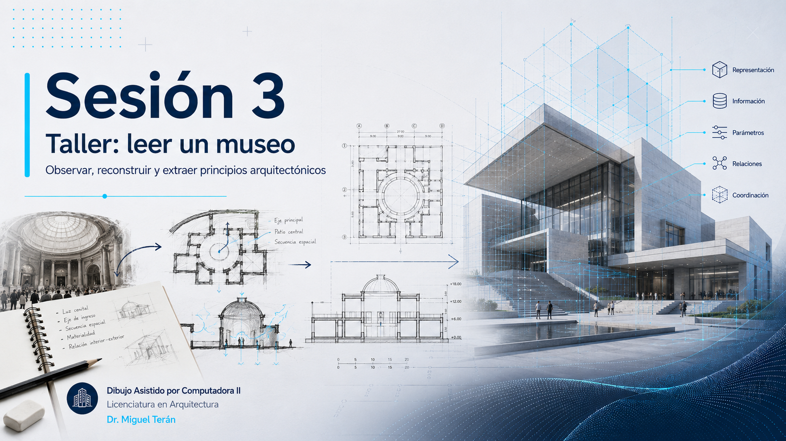
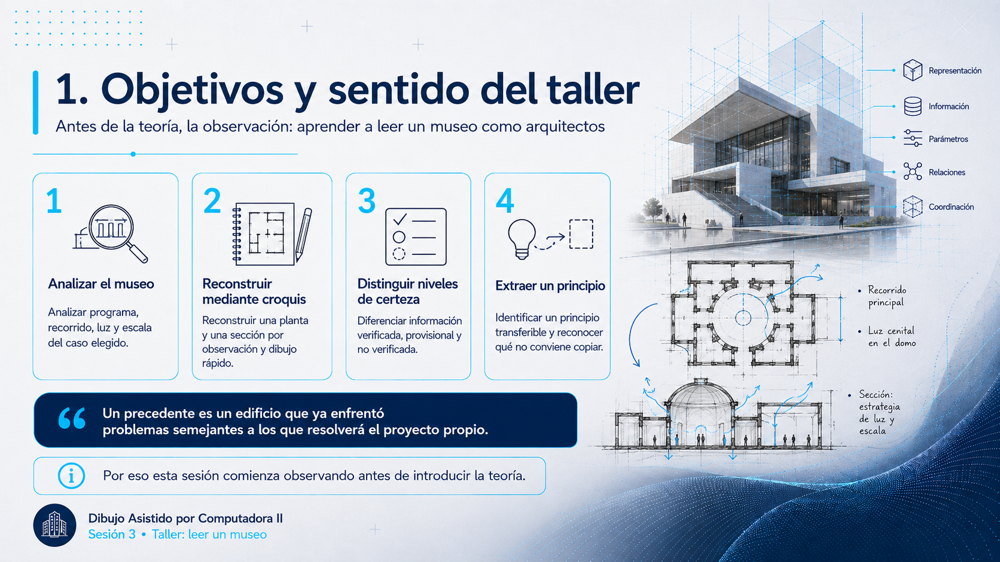
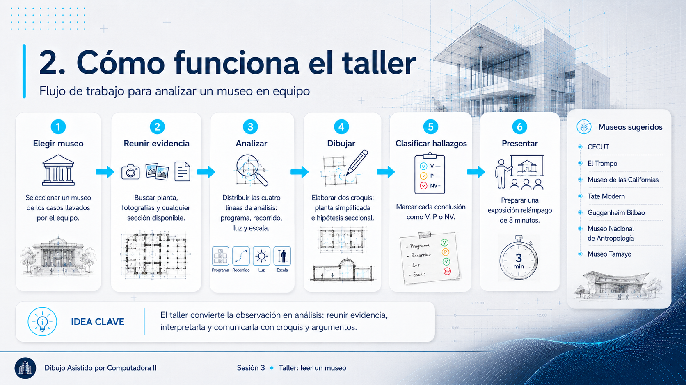
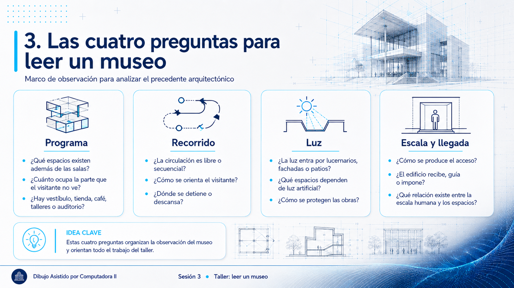
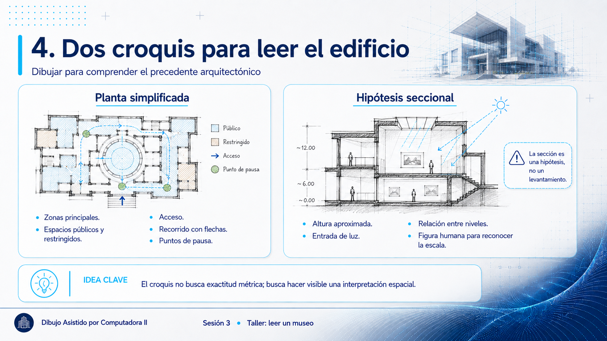
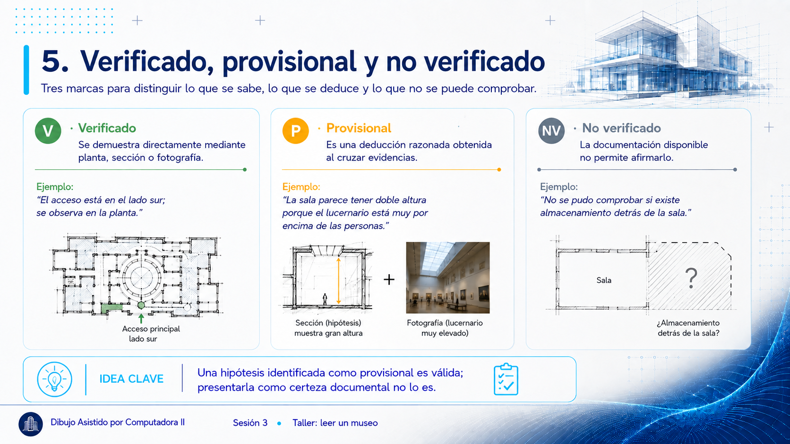
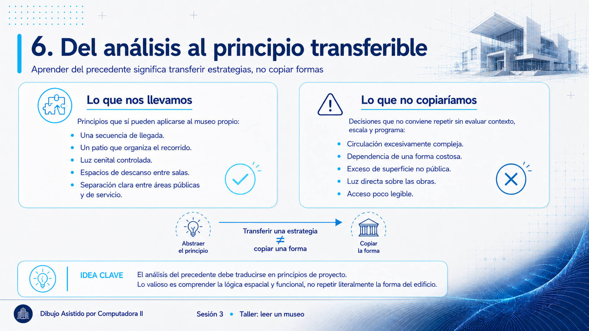
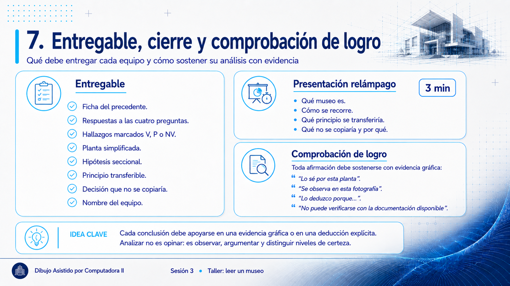

Sesión 3 · Taller: leer un museo
Primer taller del curso. Antes de la teoría, la mirada: cada equipo analiza un museo real y descubre, por observación, qué hace funcionar a este tipo de edificio.

Objetivos de esta sesión
Al terminar podrás:
- Analizar un museo real leyendo su programa, su recorrido, su luz y su escala.
- Reconstruir en croquis la planta y la sección de un edificio que no proyectaste.
- Marcar cada hallazgo como verificado, provisional o no verificado, y sostener las deducciones con su razonamiento.
- Extraer un principio transferible a tu propio museo, distinguiéndolo de lo que no conviene copiar.
En la Sesión 2 planteamos la idea grande: de dibujar a modelar información. Hoy toca mirar. Cada quien trajo un museo o espacio cultural (la tarea de la S2); en equipo elegirán uno y lo leerán como arquitectos. No hay teoría todavía: la teoría de la próxima sesión caerá sobre lo que hoy descubran solos.

Por qué empezamos mirando
Un precedente es un edificio construido que ya resolvió el problema que tú vas a enfrentar. Aprender a leerlo (qué decisiones tomó, por qué funcionan) es la herramienta más antigua y efectiva del proyectista. Y hay un beneficio extra: cuando en la Sesión 4 veamos el programa y la museografía "en teoría", ya los habrás visto en acción.
El ejercicio (en equipo)

- Elijan un museo de los que trajeron (si ninguno convence, elijan de la lista de abajo). Reúnan planta, fotos y lo que encuentren.
- Léanlo con cuatro preguntas, una por integrante si quieren repartirse:
- Programa: ¿qué espacios tiene además de las salas? (vestíbulo, tienda, café, talleres, auditorio…) ¿Qué tan grande es la parte que el visitante no ve?
- Recorrido: ¿cómo te mueve el edificio? ¿Libre o en secuencia? ¿Dónde descansas?
- Luz: ¿de dónde viene? ¿De lucernarios, de muros de vidrio, de luz artificial? ¿Qué protege a las obras?
- Escala y llegada: ¿cómo es entrar? ¿El edificio te recibe, te impone, te guía?
- Dibujen, no solo escriban. Dos croquis, no uno:
- Una planta simplificada con las zonas y el recorrido en flechas.
- Una hipótesis seccional de la sala que más les gustó: un corte a mano alzada que muestre la altura aproximada, por dónde entra la luz y una figura humana que dé la escala. Se llama hipótesis y no levantamiento porque nadie espera que sea exacta: es tu mejor deducción a partir de lo que encontraste.
- Cierre relámpago: cada equipo presenta su museo en 3 minutos: qué es, cómo se recorre, qué principio se llevarían a su propio proyecto y qué no copiarían y por qué.


Marca qué sabes y qué estás deduciendo
Van a analizar un edificio que no proyectaron y, casi seguro, que no han visitado. Habrá cosas que la documentación muestre con claridad y otras que tengan que deducir. Las dos son válidas; confundirlas no. Junto a cada hallazgo de su ficha, escriban una letra:
- V: verificado. Se ve en una planta, una sección o una fotografía. Pueden señalar exactamente dónde.
- P: provisional. No aparece directamente, pero lo deducen cruzando varias evidencias («la sala debe tener doble altura porque en la foto el lucernario queda muy por encima de las personas»). Es una hipótesis razonada, no un dato documentado.
- NV: no verificado. La documentación no permite afirmarlo. Escríbanlo igual.
Un análisis con varios NV honestos vale más que uno donde todo parece resuelto porque alguien rellenó los huecos.
Estas tres marcas no son un invento de hoy: son el vocabulario que usarán durante todo el curso. En la Sesión 5 se les sumará una cuarta, D (decisión didáctica), para los supuestos que acordemos en clase, pero eso será cuando proyecten su propio museo. Hoy, analizando el de otro, no hay nada que decidir: solo lo que se ve, lo que se deduce y lo que no se sabe.


Si necesitan un museo, empiecen por aquí
- Cercanos: CECUT (Tijuana), el museo que casi todos conocen; El Trompo (Tijuana); Museo de las Californias.
- Clásicos contemporáneos: Tate Modern (Londres, Herzog & de Meuron, 2000), una central eléctrica reusada como museo; Guggenheim Bilbao (Gehry, 1997), el museo que transformó una ciudad. Ambos analizados en Montaner (2003).
- Mexicanos: Museo Nacional de Antropología (Ramírez Vázquez, 1964), por el patio y el paraguas; Museo Tamayo (González de León y Zabludovsky, 1981).

Entregable de la sesión + tarea
Al cierre: la ficha del precedente (las cuatro preguntas respondidas, con cada hallazgo marcado V / P / NV), los dos croquis (planta e hipótesis seccional) y el principio que se llevan junto con lo que no copiarían. Todo con el nombre del equipo. Tarea: guarden su ficha. En la Sesión 4 veremos la teoría del museo (programa, museografía, luz) y van a reconocer en ella todo lo que hoy observaron; y en la Sesión 5 esa ficha alimenta el brief de su propio museo.
Comprobación de logro
En el cierre relámpago, cada conclusión que presentes debe apoyarse en una evidencia gráfica señalable: «lo sé por esta planta», «se ve en esta sección». Una afirmación sin dibujo que la sostenga («es dinámico», «es moderno») no cuenta como análisis.
Y si el dato es P (deducido), dilo: «deduzco que hay doble altura porque…». Sostener una deducción con su razonamiento es análisis; presentarla como certeza documentada, no.
Referencias
- Montaner, J. M. (2003). Museos para el siglo XXI. Gustavo Gili.
Qué sigue: Sesión 4, el proyecto del semestre: qué es un museo y cómo se organiza por dentro.